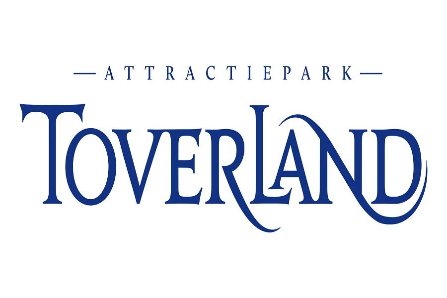

Attractiepark Toverland, kortweg Toverland, is een deels overdekt attractiepark in het Nederlandse Sevenum.
Het is een van de jongste attractieparken van Nederland. Toverland opende op 19 mei 2001 als overdekte speeltuin
en is inmiddels uitgegroeid tot middelgroot themapark met een groeiende oppervlakte en stijgend bezoekersaantal.
In de jaren 10 ontving het attractiepark diverse prijzen voor beste attractiepark en 'leukste uitje'.